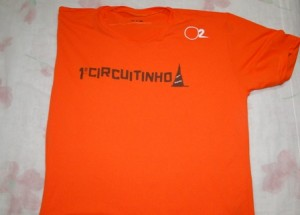
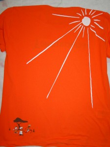

Cia. Ex-sedentário
vamo, vamo, vamo…
Esta semana, foi uma semana de boas lembranças, fiquei pensando na prova e no sucesso que foi. Tínhamos a sensação de que não faríamos em menos de 5 horas. Mas cada um superou o seu tempo pessoal e conseguimos terminar a prova com 4:47:57 (resultado oficial).
Eu mesmo tinha como meta o tempo de 45 minutos e acabei fazendo em 41:52. Foi uma vitória pessoal.
| Nome | Tempo T. | Passagem |
|---|---|---|
| DENIS | 00:37:13 | 00:37:13 |
| EVELIN | 00:37:02 | 01:14:15 |
| ADRIANO | 00:45:58 | 02:00:13 |
| MARISA | 00:35:01 | 02:35:14 |
| MARINA | 00:33:24 | 03:08:38 |
| ALEX | 00:41:52 | 03:50:30 |
| CEZAR | 00:33:28 | 04:23:58 |
| WILLIAN | 00:23:59 | 04:47:57 |
Eu fui o mais lento apesar do tempo do Adriano marcar mais. Mesmo assim considero um tempo bom já que tenho sobre peso. A semana foi de descanso, aproveitei para cuidar da minha gripe e dor no tornozelo. Mas em paralelo já iniciei um regime. Quero continuar a correr e a perda de peso é item fundamental neste trabalho.

Sábado dia 25/09 aconteceu aqui em Sampa o 1º. Circuitinho. A princípio o site da corrida dizia que seria realizado no domingo, com entregas do kit no sábado. Já havia feito a inscrição da Syssi, mas pairava no ar uma grande dúvida, corrida realmente no domingo? Dia 25 era sábado e o local da retirada do kit ainda a definir …..
Há 20 dias do evento liguei para o contacto para certificar-me das datas. Confirmaram que a corrida seria no sábado e que talvez a retirada do kit ocorresse no próprio dia da corrida ou na semana anterior, informações que deveriam ser divulgadas talvez com uma semana de antecedência. Contudo, somente no meio da semana passada o site divulgou que a retirada do kit seria no dia da corrida.
O evento foi realizado no Jóquei e o acesso se deu pelo portão de estacionamento ao lado direito. No final da alameda do estacionamento do lado esquerdo estariam as tendas para retirada do kit e chip de cronometragem.
As pistas de corrida foram montadas numa parte do pateo do estacionamento tendo os portais bexigas coloridas para dividir os metros por faixa etária.
Depois de colocar o chip no tênis da Syssi e feito alongamento, ficamos observando a corrida das crianças de 7/8 anos.


Observei que a pista era bastante irregular com buracos, boca de lobo acima do nível da rua, remendos de asfalto, desníveis, tanto que vários foram os tombos dos pequenos nas corridas, inclusive vi a queda de um menino perto de nós que quando foi acudido pelo pai sua calça de moleton tinha um belo rasgo no joelho.
Mostrei para Syssi as irregularidades da pista e pedi que ela fosse cautelosa e, aqueles outros conselhos de sua primeira corrida, não ficar na muvuca, não disparar no início, não olhar para os lados, seguir em frente caso caísse (mas rezando para não cair, pois isso desestrutura o pequeno atleta).
Desta vez a distância seriam de 300m, o dia estava com a temperatura em elevação, mas as corridas aconteciam em local arborizado.
Chegou a hora do alinhamento da Sy e fique do lado direito da pista, pois assim eu poderia caminhar com mais liberdade e ter com ela na chegada (mas o pai já estaria por lá para recebê-la).
Quando cheguei ela já estava sem o chip, mas um pouco emburrada, logo me veio o pensamento de uma queda, mas não a vi cair, ela reclamava de dor no lado do peito. Estendi minha canga no gramado e a fiz deitar um pouco para se acalmar. Depois de um tempo ela diria para mim que ficou com as pernas tremendo na largada e que lhe faltou ar no final da corrida.
Não exigimos dela nenhuma colocação, apenas cuidado para as quedas, mas não avaliei seu eventual stress, já que a corrida deles acontece por baterias e dos adultos todos correm juntos, um diferencial psicológico bastante importante.
Minutos passados ela voltou a ser a menina alegre e sorridente que sempre foi. Como estava devidamente medalhada pediu um presente para o pai, ir ao shopping almoçar para desfilar com sua medalha de peito estufado. Essa é a nossa SYSSI!!!
Acho que organização pecou quando não deu a devida atenção à pista dos corredores mirins. Aliás, quedas nessa idade são bastante frequentes. Puxando pela memória, também na 12ª. PA Kids vários foram os tombos. Espero que para o próximo ano seja ultra melhorada a pista de corrida.
Quanto ao lanchinho, a mochila do kit veio recheado de mini-waffles, bolinhos e, no final da corrida um saquinho com sanduíche de frios, bombom, bolachas e uma caixinha de achocolatado.
Hidratação foi abundante e o clima ajudou aos pequenos, ao inverso do que a previsão do tempo dizia (sábado dia chuvoso).
Espero também que alguma organizadora crie uma Corrida de Rua Fun Family nos moldes da que já existe no Rio de Janeiro, eles adoram quando podem correr junto com os pais, irmãos, amigos e os demais corredores, porque é frustrante corrida por baterias.
Fica aqui meu apelo para mais esse evento.
 frente da camiseta
 costas da camiseta
 detalhe da camiseta e medalha
detalhe da camiseta e medalha
Todos que correram ontem, o fizeram debaixo de muita chuva. Ate que em relação a isso saí com roupa apropriada e cuidei bem dos pés.
Eu recomendo o passeio que fiz. Muito bom, mesmo com chuva intensa e ininterrupta de três horas (tempo que durou meu treino).
http://www.mapmyrun.com/route/br/s%e3o%20bernardo%20do%20campo/843128558867252866
O trecho da Rodovia Anchieta foi meio “tenso”, mas porque chovia muito e ainda estava escuro, mesmo já sendo 06 horas. Principalmente quando fiz o meia -volta-volver, senti falta de companhia. Eu estava com corpo e hidratação em ordem. A chuva não deixou sequela alguma. Faltou foi força de vontade mesmo. Com 02H53Min caminhei um pouco não sei exatamente por que e me desnanimei. Corri mais um pouco, andei mais um pouco, mas isso nem marquei. Sei que foram 25km 3horas. Meu primo Marcos me resgatou às 09:00 eu estava na pista a 03h20min, caminhando e com frio.
O passeio é belo e fica a recomendação.
PS: Último post rosinha. Ufa!


Depois de terminada a corrida fui abordada por um membro de um site de divulgação de fotos e resultados de corridas de rua que informou: o resultado sairá em 72 hs! Uma eternidade para mim que não cronometrei meu tempo.
Só que as 72 hs foram esticadas, o que tornou um verdadeiro calvário, mas insistentemente igual a conta-gotas, ops, conta-minutos acessando o site da organização, chegou ao fim minha angústia e ansiedade………….. acabou de ser divulgado os resultados.
É com muito orgulho que colo abaixo nossa classificação!!!
EQUIPE EX-SEDENTÁRIO………………
P A R A B É N S !!!!!!!!!!!!!!!!
| Equipe: | EX-SEDENTARIO | Número: | 1478 | Categoria: |
| Colocação: | 2280 | Tempo: | 05:37:19 |
| Núm. Peito | Nome | Sx | Tempo | T. Passagem |
| 1478-1 | SAMUEL JOSE DE OLIVEIRA | M | 00:34:44 | 00:34:44 |
| 1478-2 | FABIO HASHIMOTO | M | 00:32:23 | 01:07:07 |
| 1478-3 | CLAUDIO LUCIO DUNDES | M | 00:33:12 | 01:40:19 |
| 1478-4 | ANA MARIA SHIBATA | F | 00:41:39 | 02:21:58 |
| 1478-5 | ANA AMELIA SHIBATA VIDAL | F | 00:45:26 | 03:07:24 |
| 1478-6 | LUCIANO NERES MARTINS | M | 00:42:03 | 03:49:27 |
| 1478-7 | IGOR ROBERTO DIAS | M | 00:47:28 | 04:36:55 |
| 1478-8 | PEDRO VILSON RIOS | M | 01:00:24 | 05:37:19 |
Um grande abraço a TODOS!!!!!!!!!!!

Cá estou para relatar minha estréia na corrida de revezamento.
A semana passada custou a terminar e a ansiedade veio com ela.
Na sexta-feira, antevéspera da corrida saiu uma matéria de Rodolfo Lucena comentando e dando dicas para a tão esperada corrida de Revezamento. De cara dizia que estavam inscritos 32 mil corredores……uauuuuuuuu…….. é uma das maiores corridas de revezamento, sendo a 8a. no rank mundial e, que 23% eram iniciantes, ou seja, eu e mais alguns de meu grupo estávamos nesse percentual de estreantes. Também deu dicas do que comer, fazer e não fazer.
Dizia o artigo que a corrida é “muvucada”. Tentei imaginar o que seriam esses 32 mil corredores na pista, digam-se, alguns corredores de nome e peso, tive a sensação de ser um grão de arroz no meio desse universo. Tratei de procurar no site do evento o resultado da equipe vencedora do ano passado, bem como a última colocada para ter idéia de tempo.
O Claudio ficou de retirar o kit, mas estava enrolado e não poderia ir buscá-lo antes de sábado. Eu estava ansiosa, o kit representava a materialidade da corrida, então me ofereci na sexta-feira para ir buscá-lo.
O kit era simples, o diferencial foram as camisetas verde escuro para o masculino e rose para o feminino. A novidade, aliás, para mim já não era mais novidade (esqueci de comentar no post anterior), foi o chip descartável, que deve ser colocado no pé direito. Dá uma falsa sensação de que vai cair, porque fica um círculo em cima do tênis, mas como deve ser amarrado, era só checar se estava seguro.

Seguindo a recomendação de Rodolfo Lucena, sexta dormi não muito tarde.
Sábado acordei somente quando meu corpo e mente quiseram despertar…… foi uma noite de muitos sonhos, aliás, sempre tenho vários sonhos, mas só consigo me lembrar dos 2 últimos. Acordei já eram 10hs45 min. Aos sábados acordar nesse horário sem ter despertado umas duas vezes pela madrugada achei estranho, mas Rodolfo disse descansar e dormir bastante, acho que meu subconsciente assimilou a informação.
Finalmente o dia da corrida de revezamento chegou! Saímos com tempo o suficiente para não ficar parado e estressado no transito.
Thiago praticamente chegou conosco no ponto de encontro. Corajoso só vestia camiseta apesar de estar gripado e a temperatura estar em 11ºC. Enquanto aguardávamos os outros membros da equipe, esbarrou por nós a mãe de uma coleguinha do colégio da Syssi, surpresas da vida. Trocamos algumas frases e ela seguiu para encontrar sua equipe, o tempo urgia.
Minutos depois chegaria também Paulo Motta colega da equipe de revezamento do Thiago. Conversamos um pouco sobre …….. corrida é claro…. Logo depois chegaria Claudio, Fabio, Samuel e Luciano. Tratamos de etiquetar e chipar o Samuel, o 1º a correr. Mais uma vez olhamos o mapa do circuito para localização das trocas impar e par. O ponto de troca impar estava próximo ao nosso ponto de encontro, mas a troca par…… no outro extremo do circuito.

Ouvimos dar a largada e quase perdemos a passagem do Samuca por nós, mas deu tempo de fotografá-lo. Logo depois o Fabio seguiria para o local da troca par.

Chegada a hora de ir, eu e Luciano deixamos no ponto de encontro Melinha, Igor, maridão Silvio e Syssi, então eu pude ter idéia de parte da dimensão de pessoas circulando aos arredores do circuito. Obrigatoriamente precisamos passar por dentro do Parque Ibirapuera que naquela manhã estava tão solitário e vazio, diferente de outros tantos domingos que lá estivemos para passear ou andar de bicicleta.
Quando cheguei ao local da troca par (na Av. Rubem Berta) vi um mundaréu de gente….. Bateu um stress, um nervoso, quantas pessoas amontoadas, outras descansando no barranco aguardando sua vez. Será que eu conseguiria ver o Claudio passar? Ou será que ele já tinha passado?? O temor era mais forte quando eu via alguns corredores passando de um lado para outro com a munhequeira na mão sem localizar o parceiro de troca.
Comecei a ficar angustiada, via os corredores passando do outro lado da rua, espiava a minha direita para ver os que estavam retornando……. e nada…….. sensação horrível a de ter perdido o parceiro de troca, que poderia acarretar atraso para a equipe. Eis que numa das olhadas vejo o Claudio chegando, me apressei para ficar bem a vista, a troca foi hiper rápida, ele caminhando forte passou a munhequeira, eu fui colocando no pulso e correndo sem perder 1 minuto, porque conheço minhas limitações. Logo atrás vinha o Claudio que correria conosco para assim fazer seu treininho.
Confesso que fiquei inibida, não tenho pernas para acompanhá-lo. Fomos seguindo, ele pegou a máquina fotográfica que eu carregava na mão para registrar a corrida, foi fotografando durante o percurso, agora não se tratava de seu tempo. Claudio fez uma restrição, não falar para não gastar energia, bom só comunicava que ia caminhar……. no mais “bico calado”………..rs

Eu seguia trotando, caminhando, peguei uma descida, depois encarei 2 subidas e perguntei ao Claudio quanto faltava, ele respondeu 2 km, bem mais a frente fiz a mesma pergunta e a resposta foi a mesma, oras……. indaguei, vc acabou de dizer 2 e não saímos disso?? Peguei uma descida novamente, quando avistei o tapete verde que pareceu não ter fim. Pensei, cadê o portão 8????????????
Caramba, passavam todos os números que antecediam e nada de aparecer o 8, foi quando avistei o Claudio com um sorriso enorme apontando para Melinha, senti um alívio, a troca também foi rápida.
Melinha seguiu com Cláudio e eu logo depois estaria no ponto de encontro onde estaria Samuel e Fábio que já tinham concluido seu percurso. Igor ali meio que sozinho, fazia o aquecimento concentrado, logo quis ir para o local da troca, eu o desestimulei, porque Melinha ainda iria passar para o Luciano, então seria um percurso de 10 km, ele ficaria tempo demais esperando num verdadeiro tédio.
Como é difícil administrar o tempo para não ficar esperando demais nos pontos de troca, mas acho que conseguimos neste quesito, tudo foi instinto.
Lembrem-se o Capitão de nossa equipe – Claudio “Pace” estava no circuito, então o consenso dos que já tinham feito o percurso administramos os outros que ainda iriam correr.
Sr. Pedro chegou e passou pelo mesmo ritual, colocar o número no peito, o chip no tênis direito. Como ainda estava cedo para ele ir ao ponto de troca, ficamos conversando, observando a performance dos corredores que passavam a nossa frente, apontando as equipes presentes, sem contar a descontração total do Samuel com suas piadas. Foi muito bom, o tempo passou que nem sentimos.

Dentre tantos corredores vimos o Thiago e Paulo passando por nós o que valeu o incentivo de força e estimulo estilo tiete mesmo!

Esse mundo realmente é pequeno …….. encontrei a mãe de outro amiguinho do colégio da Sy, para minha surpresa não sabia que também participava da corrida. Não deixei de incentivá-la – Força Cristina!!!, gritei. Acho que assustei um pouco, pela reação ela não esperava alguém naquela hora, naquele lugar gritando seu nome, quando me viu lançou um sorriso e foi na sua batida.
A manhã começava a esquentar com um leve sol despontando dentre as nuvens escuras e eu ali com alguns integrantes da equipe que eu não conhecia, nunca trocamos comentários em blog, conversando como se fosse amigos de longas datas. Ainda bem que sempre tinha alguém para conversar e fazer companhia para o Silvio, porque ficar ali esperando horas por nós, não deve ter sido agradável.

Aproximava o momento do último integrante da equipe revezar. Levantamos acampamento. Samuel levaria o Sr. Pedro para o local da troca e os demais seguiriam também para cruzarmos a linha de chegada. Luciano acabou indo embora e não participou da reta final da equipe, tinha compromissos.
Syssi ficou empolgada e taxativamente disse que correria ao meu lado na reta final. O Papy ficaria sozinho para registrar o momento da chegada. E assim foi. A equipe unida cruzou a chegada sob os olhares e saudação do Alecão na tribuna Vip, nosso garoto Taeq e as lentes do Silvio.

Sr. Pedro demonstrava uma satisfação impar nessa empreitada, era contagiante, alegria maior foi cruzar a chegada unidos.
Tudo foi perfeito, lamentei apenas não ter cronometrado meu tempo na corrida, diante de minha ignorância que algumas vezes persiste em ativar/acionar o cronometro, acabei fazendo o percurso sem saber meu tempo. Agora fico aguardando a divulgação do resultado que deverá ocorrer somente na quinta feira.
Uma certeza ficou, esforçamos bastante para fazer nosso melhor tempo, houve um grande entrosamento e espírito de equipe dos integrantes que até então eram desconhecidos entre si.

Comentou nosso amigo Fabio Namiuti que deixei de ser principiante, mas jamais imaginei estar participando de uma corrida de revezamento. Agora sei por que cada vez tem mais inscritos……
Agradeço pela oportunidade de compor a equipe que já está pensando numa próxima…….
Enfim, valeu a pena ter madrugado no domingo.
Carpe Diem!!!!!!!!!!!!!!!
link para fotos:
http://picasaweb.google.com.br/110316945136018300007/18aCorridaDeRevezamento?feat=directlink
O Paulo Motta que todos conheceram no dia da Maratona tem um site e nele o relato do revezamento.
https://sites.google.com/site/pultemporada2010/
Coloquei em meu último post as fotos desse evento.
Abraços
Ainda há tempo.
Hoje é o dia do aniversário do Grande Thiago Zamith.
Ele é o meu herói e é referência para toda a equipe Ex-sedentario. Exemplo em todos os sentidos. De uma educação sem igual. Incansável incentivador. E não desiste nunca dos amigos. Comigo então ele é um Santo. São tantos altos e baixos e tanta choradeira, que só vendo a paciência. Seu lugar está garantido no Céu, Thiago.
Um pouco tímido e reservado para os padrões Dundísticos. Mas um amigo de verdade. Eu nunca vi tão eufórico como na Maratona de ontem.
Thiago, toda a felicidade e sucesso para você. Um cabra que merece e muito. E muito obrigado pelo amor ao esporte e aos amigos. Agradecimento que faço em nome de toda família Ex-sedentário.
Foi um amigo que ganhei em razão deste blog e que levarei para o resto da vida.
Adorei esse negocio de fazer maratona no revezamento, foi uma ótimo experiência, alguns acharia uma chatice fazer uma maratona passando 4 vezes pelo mesmo percurso, e seria mesmo se por lá não estivesse nossos amigos.
A festa foi maravilhosa, todos postos de troca ficava procurando os amigos ex-sedentarios para mandar mensagens de força, me encontrei com quase todos, são não lembro de ter visto o Samuca e o Seu Pedro, encontrei também amigos a há tempos não via, tudo isso foi o que me deu forçar para continuar.
Durante a prova pensei em parar por causa de minha gripe, na segunda volta já estava com 23km pensei em parar com medo de forçar muito, resolvi fazer mais uma volta e parar com 33 ou 35km, quando estava com 30km estava me sentindo bem, os efeitos da gripe eram menores e resolvi partir para ultima volta, foi muito a melhor parte foi ver o Alecão na linha de chegada do alto de sua sala VIP gritando meu nome, foi muito bom o percurso de 43.430Mts, bom os 2 GPS apontavam isso, mais que uma maratona e o tempo de 5h2min.


Bom galera, passada a primeira prova em que participo, passada a ansiedade da largada, a euforia de terminar , vem as dores … mas é uma dor diferente. Ainda ontem a noite fiquei pensando na prova, quase não dormi (isso porque na noite passada já não tinha dormido direito pela ansiedade e o medo de perder a hora .. rsss).
Essa dor que sinto hoje nas pernas serve para eu não esquecer do que fiz ontem, e da satisfação de participar e completar a prova. Como tive que ir embora mais cedo não pude receber minha medalha ontem, mas hoje a primeira coisa que o Alecão fez foi me entregar a medalha … então segue as fotos da entrega de medalhas … kkkkkkkkkkkkkkkkkkkkkkkkkkkkkkkk
Foi ótimo correr com todos vocês, e não será a ultima lhes garanto !
Uma boa semana a todos e se recuperem rápido para a próxima !


 E M O C I O N A N T E
E M O C I O N A N T E
Esta é a palavra que define a superação.
Parabéns Sr. Pedro.
E parabéns a todos aqueles que superaram seus limites como eu!
.jpg "DSC01704 (1024x576)")
.jpg "DSC01734 (1024x576)")
.jpg "DSC01793 (1024x576)")
.jpg "DSC01826 (1024x576)")
.jpg "DSC01919 (1024x576)")


Nós somos 100 Juízo
Nós somos Baleias
Últimos comentários